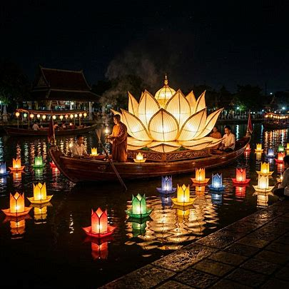

Timeless Charm
Discover the Soul of Vietnam
From the mystical waters of Ha Long Bay to the vibrant pulse of ancient cities, embark on a curated journey through a land of profound heritage and modern grace.
Through the Ages
Iconic Landmarks
The story of Vietnam is not a linear path, but a tapestry of overlapping influences, resistance, and breathtaking cultural synthesis.
A thousand-year-old capital and the center of northern legitimacy
Hanoi
Experience the timeless soul of Vietnam where century-old colonial architecture meets the rhythmic pulse of modern street life.

The 36 Streets
The Old QuarterMonument of Enlightenmentney toward awakening.

Văn Miếu
Temple of LiteratureA sanctuary of wisdom and the site of Vietnam's first national university.

Water Puppet Theater
PerformanceWitness the magical 11th-century art form that brings rural Vietnamese folklore to life on water.
The final imperial capital
Hue
Step into a living masterpiece where the echoes of the Nguyen Dynasty resonate through crimson pavilions, sacred pagodas, and the gentle flow of the Perfume River.

Hue Imperial City
The Imperial CitadelA sprawling fortress of forbidden cities and majestic gates, echoing 143 years of imperial rule.

City of Ghosts
Ancestral TombsArchitectural homages to the emperors, nested in nature.

Nha Nhac Performance
UNESCO HeritageImmerse yourself in the celestial sounds of the Royal Court Music, a bridge to the past.
A strategic maritime port (non-capital)
Da Nang
Experience the dynamic soul of Central Vietnam. From the pristine sands of My Khe to the spiritual heights of the Marble Mountains, Da Nang offers a sophisticated blend of modern luxury and heritage charm.

Ngũ Hành Sơn
The Marble MountainsA cluster of five limestone and marble hills representing the five elements. Ascend the stone steps to discover hidden grottoes, ancient Buddhist sanctuaries, and panoramic vistas of the coastline.

The Dragon Bridge
City LandmarkA symbol of power and nobility, this 666-meter bridge comes alive every weekend with a spectacle of fire and water.

My Khe Beach
Natural WonderRanked as one of the world's most beautiful beaches, offering fine white sand and a host of luxury resorts.
An economic hub born from southward expansion
Saigon（HCMC）
Experience the rhythmic pulse of Ho Chi Minh City, a sprawling metropolis where soaring skyscrapers frame centuries-old French colonial spires and the scent of street coffee fills the tropical air.

Bitexco Financial Tower
Iconic landmarks, stunning views Inspired by the lotus bud, this architectural marvel symbolizes the city's rapid ascent as a global economic hub.

Notre-Dame Basilica
Chasing history in Saigon 🏛️Stunning European architecture mixed with vibrant Vietnamese energy.Caught a glimpse of this iconic red cathedral during my morning walk. 🚶♂️Every corner of this city has a story to tell.

Vesak Lantern Float
Illuminating the night for Vesak DayWitnessed thousands of lotus lanterns floating down the canal in Saigon.The entire river turned into a sea of glowing lights, creating a magical atmosphere.A truly breathtaking and peaceful moment to remember.
Fragrant Broths & Street Food Traditions
From delicate Pho broth to smoky Bun Cha and crisp Banh Mi, Vietnam’s cuisine is a vibrant blend of fresh herbs, regional flavors, and centuries of cultural exchange shaped by trade, migration, and local tradition.

Pho
The national dish. A symphony of star anise, cinnamon, and charred ginger in a slow-simmered bone broth.

Banh Mi
A perfect fusion of French and Vietnamese flavors, layered with crisp vegetables, savory meats, fresh herbs, and chili inside a light baguette.

Bun Cha
Smoky grilled pork served with rice noodles, fresh herbs, and a delicate sweet-sour dipping sauce that captures the spirit of Hanoi street dining.
ベトナム社会主義共和国の歴史
Land of Dynasties & Resilience
From ancient Vietnamese kingdoms and Chinese rule to colonial struggles, war, and reunification, the history of the Socialist Republic of Vietnam is a story of endurance, national identity, and remarkable resilience.
古代
ドンソン文化（東山文化）
紀元前4～5世紀頃から紀元1～2世紀頃にかけてベトナム北部の紅河（ホン川）流域を中心に栄えた、東南アジアを代表する初期の金属器文化。農耕技術がこの時代に大きく定着。ベトナム最初の古代国家とされる文郎国や甌雒国の基盤となった。
文郎国（ヴァンラン国） （紀元前8～7世紀頃）
ベトナム最初の伝説的な国家。
甌雒（アウラク） （紀元前257年～紀元前179年）
文郎国を統一した国家。
南越国 （紀元前207年～紀元前111年）
中国南部～ベトナム北部。秦の滅亡後に成立し、漢に併合されるまで存続。
チャンパ王国 林邑国期(192年-757年)
ベトナム中部に成立したオーストロネシア系の海洋国家。
中国（後漢）の支配をはねのけて独立した最初の黎明期です。現在のフエやダナン周辺（ベトナム中部の北側）を拠点にしていました。最初は中国文化の影響もありましたが、5世紀頃からインド文化（ヒンドゥー教）を本格的に取り入れ、独自の文字や神殿（世界遺産のミーソン聖域）を作り始めた「国づくりの時代」です。
中世
北属期 （紀元前111年～938年）
中国王朝の支配期。南海郡等が設置され、唐代には安南都護府が置かれた。
第1次白藤江の戦い（938年）：呉権は、南漢（中国五代十国）の水軍を撃破
呉朝（939年～967年）
中国からの独立を果たした最初の王朝。
丁朝 （968年～980年）
ベトナム北部を統一し、皇帝を称する。
前黎朝 （980年〜1009年）
宋の侵略を完全撃破（第2次白藤江の戦い（981年））：初代皇帝の黎桓
李朝(大越国) （1009年～1225年）
李公蘊 ハノイへの遷都（昇竜/タンロンの伝説、1010年）
仏教文化が栄え、国名を「大越」とする。
陳朝(大越国) （1225年～1400年）
第3次白藤江の戦い（1288年）モンゴルの侵攻を撃退。陳興道が総司令官として活躍
独自の文化とベトナム文字（チュノム）の誕生
南進（サイゴン・ダナンへの道）の始まり
胡朝 (1400年～1407年)
胡朝の開祖である胡季犛：首都をハノイから清化（タインホア）へ
中国（明）の侵略を招き、ベトナムを滅亡寸前にした（明の属領）
永楽帝はベトナムの内政に干渉→明の支配下に(1407～1427)
チャンパ王国 環王国期(757年-859年)
南部のパンドゥランガを中心に勢力を維持した時期。
「首都が南へ大移動したこと」が、時期が分かれる最大の理由です。北のベトナム（当時は中国の支配下）からのプレッシャーを避けるため、現在のニャチャンやファンラン周辺（中部の南側）へ拠点を移しました。南部の豪族が主導権を握ったため、それまでの林邑期とは政治の中心メンバーがガラリと変わった激変期です。
近世
黎朝 （1428年～1789年）
明の支配を排除し、独立を回復。
再び昇龍（ハノイ）を首都に定める
16世紀、南北に分裂 <北部>鄭氏 <南部>阮氏
西山朝(1778年～1802年)
・阮氏(1777)・鄭氏(1786)を滅ぼして西山朝を開く
西山出身の３兄弟(阮文岳・阮文侶・阮文恵)
阮朝 （1802年～1945年）
ベトナム全土を統一した最後の王朝。
チャンパ王国 占城国期 (860年-1693年)
黎朝第５代黎聖宗により滅亡(1471)≪第1段階:事実上の壊滅≫
ベトナム（大越国）の南進により圧迫されるが、17世紀末まで存続した。≪第2段階:直轄領（ベトナム領）～完全な消滅≫
再び首都が少し北のクイニョン周辺（中部の真ん中）に戻り、チャンパとしてのアイデンティティが最も成熟した最強の黄金期（かつ最後の衰退期）です。海上貿易で大儲けし、日本の朱印船とも貿易を行っていたのはこの時代です。しかし、この時代の後半（1471年）にハノイの黎朝に大敗し、最終的に1693年に阮氏のご先祖様に飲み込まれて国が消滅することになります。
近現代・現代
フランス植民地時代 （1887年～1945年）
フランス領インドシナの一部として統治される。
フランスはベトナムを「北部のトンキン」「中部のアンナン」「南部のコーチシナ」の3つに分断して支配。これらをカンボジアなどと合体させ、1887年に「フランス領インドシナ連邦」として地政学的に1つへと統合
ベトナム帝国 （1945年3月〜8月）
1940年（第二次世界大戦中）から、日本軍がこの地域に進出（仏印進駐）
ベトナム民主共和国（北ベトナム)(1945年～1976年)
ホー・チ・ミンによる独立宣言後の国家。
ベトナム共和国（南ベトナム)（1955年～1975年）
アメリカの支援を受けた南部の国家。
ベトナム社会主義共和国 （1976年～現在）
南北統一後の現在の国家。ベトナムの歴史は、中国の影響を受けつつも独自の文化とアイデンティティを築いてきました。
1978年12月：国境を侵されたベトナム軍がカンボジアへ進攻。
1979年1月：ベトナム軍が首都を制圧し、ポル・ポト政権を打倒。新しい親ベトナム政権（プノンペン政権）を作る。
1979年2月：中越戦争
1989年：ベトナム経済が限界を迎え、ベトナム軍がカンボジアから完全撤退。
1991年：カンボジア和平パリ協定
1986年：第6回党大会においてドイモイ（刷新）政策が打ち出される
ベトナム戦争史まとめ
呉朝：第1次白藤江の戦い（938年）：対 南漢（中国五代十国時代に広東省・広西チワン族自治区・ベトナム北部を支配した地方政権。） 呉権（ゴ・クエン）が川底に鉄の杭を仕掛け、引き潮を利用して中国（南漢）の水軍を壊滅させた。これにより1000年に及ぶ中国支配から独立を果たす。
前黎朝：第2次白藤江の戦い（981年）：対 北宋 黎桓（レ・ホアン）率いる軍が、再び白藤江で中国（北宋）の侵略軍を撃退した。
陳朝：第3次白藤江の戦い（1288年）：対 元 名将・陳興道（チャン・フン・ダオ）が過去の杭打ち戦術を応用し、最強のモンゴル帝国（元）の大軍に大勝利を収めた。
西山朝（タイソン）：ドンダーの戦い（ハノイ（昇龍）の戦い）（1789年）：対 清・後黎朝連合軍西山朝の初代皇帝・光中帝（阮恵）が、中国（清）と旧勢力の連合軍を激しい奇襲で破った。
近現代（フランス・アメリカ・中国との戦い）
1946年：インドシナ戦争（フランスからの独立戦争が勃発）
1954年：ディエンビエンフーの戦い（フランス軍に大勝し撤退させる）
1954年：ジュネーブ休戦協定（17度線を境界線として南北に分離）
1965年：アメリカ軍による北爆開始（ベトナム戦争が本格化）
1973年：パリ和平協定（アメリカ軍が全面撤退）
1976年：南北統一（国名を「ベトナム社会主義共和国」に改称）
1979年：中越戦争（カンボジア問題を巡り、侵攻してきた中国軍を撃退）
1991年：カンボジア和平パリ協定
南進の歴史
1. 「大越」という名前の歴史
実は、李朝や陳朝だけでなく、その後の王朝もずっと同じ場所を首都にして「大越」を名乗り続けました。
・李朝（ハノイが首都）：途中で国号を「大越」に変える
・陳朝（ハノイが首都）：国号は「大越」のまま
・（胡朝：一時的にタインホアへ遷都し「大虞」に変えるが、すぐに滅亡）
・黎朝（ハノイが首都）：中国から独立を奪還し、再び「大越」に戻す
このように、「ハノイを首都とする、北の正統なベトナム国家」の標準的な名前が「大越」だったのです。
2. 「ベトナム（越南）」という名前はいつできた？
私たちがよく知る「ベトナム（越南）」という国号は、ずっと後になって、首都がHue（フエ）に移ってから誕生しました。
1802年にフエで阮朝（グエン朝）を開いた嘉隆（ザロン）帝が、それまでの「大越」ではなく、南部も北部もすべて統一した新しい国にふさわしい名前として、中国（清）の皇帝に「越南（ベトナム）」という国号を認めさせました。
3. 当時の「南側」には別の国があった
李朝や陳朝が「大越国」としてハノイ周辺を治めていた時代、現在のベトナムの中部や南部（ダナン、フエ、サイゴンなど）は、大越国ではありませんでした。
・中部（フエ・ダナン周辺）：インド文化の影響を受けた「チャンパ王国（占城）」という全く別の国があり、大越国（ハノイ）とは何度も激しい戦争をしていました。
・南部（サイゴン周辺）：さらに南は、クメール人（カンボジア）の土地でした。
ハノイを首都にした時代（李朝・陳朝・黎朝）➔ 場所がベトナム「北部」だけだったので、国名は「大越国」。
フエを首都にした時代（阮朝）➔ 「南進」が完了し、現在の南北に長い国土になったので、国名が「ベトナム（越南）」になった。
ベトナム史最大の罠は、「みんな阮（グエン）さん問題」
ベトナム人の約4割が「阮（グエン）」姓なので、歴史上にも違うグループのグエンさんが大量に登場し、頭をごちゃごちゃにさせます。
正体：16世紀〜18世紀に、ベトナムの南半分（フエ周辺）を支配していた大名・王族グループ。彼らはまだ国家の「中心」ではなく、あくまで「地方の一大勢力（地方政権）」に過ぎませんでした。
特徴：後にできる「阮朝」の直接のご先祖様です。「北の正統」であるハノイ（黎朝）に対抗し、フエを拠点にどんどん南へ領土を広げ（南進）、サイゴンを開拓しました。
正体：西山朝（タイソン朝）を起こした3兄弟（阮岳・阮侶・阮恵）。
特徴：実はこの3兄弟、もともとの名字は「胡（ホー）」でした。しかし、当時人気があった①の「広南阮氏」のふりをして民衆の支持を集めるために、わざと「阮（グエン）」に名字を変えて反乱を起こした偽物のグエンさんです。①の広南阮氏を一度全滅寸前まで追い詰めました。
ハノイを攻めた英雄グエン・フエ(光中帝) ➔ 西山朝のグエン
正体：1802年にベトナムを統一した、初代の嘉隆（ザロン）帝から始まる天皇家。
特徴：②の西山兄弟に一族を殺され、サイゴンへ逃げていた①の生き残り（阮福映 / グエン・フック・アイン）が、執念の大逆転で②を滅ぼして建てた王朝です。
フエに首都を置いたザロン(嘉隆)帝 ➔ 阮朝のグエン
ベトナム史におけるチャンパの重要性
1. 【言語も宗教も違う】全く別の民族の国だった
ベトナム人（京族）は中国の影響を強く受け、漢字や仏教、儒教を信仰していました。しかし、チャンパ王国の国民（チャム族）はインドやイスラム文化の影響を強く受けていました。言葉も全く違い、宗教もヒンドゥー教やイスラム教を信仰していました。つまり、歴史の大部分において「お隣にある別の外国」だったのです。
2. 【1000年の宿敵】ハノイ vs 中部の戦い
李朝や陳朝、黎朝がハノイ（大越国）を首都にしていた時代、チャンパはHue（フエ）やDa Nang（ダナン）からさらに南の中部沿岸を拠点にしていました。両国は1000年以上にわたり、領土をめぐって激しい戦争を繰り返しました。
・チャンパの軍がハノイ（昇龍）まで攻め込んできて、王宮を焼き払ったこともあります。
・逆に、陳朝の時代には政略結婚の結納品として、チャンパからフエやダナンの土地を譲り受けた（これがベトナムの領土になった）こともありました。
3. 【南進の犠牲】阮氏のご先祖によって滅亡へ
15世紀の黎朝の時代にチャンパは決定的な大打撃を受け、領土の大部分を失います。そして、さきほど登場した「フエを拠点にした阮氏のご先祖様（広南阮氏）」が南進を強烈に推し進めたことで、チャンパはどんどん南の隅へと追い詰められ、19世紀の阮朝（ザロン帝の時代）に完全にベトナムへと併合され、国として消滅しました。
チャンパを追い詰め「サイゴン」の基礎を作ったのは、西山朝に殺される前の「本家グエン氏」です。そして、奇跡的に1人だけ生き残った王族が、後に西山朝へ復讐を果たして「サイゴン」を大都市へ発展させました。
4. チャンパには「2段階の滅亡」があった？
「1471年に黎聖宗（レ・タイン・トン）がチャンパを滅ぼした」と書かれることが多いため、疑問に思われるのは当然です。1471年に滅びたのはチャンパの「北半分の最大勢力（首都ヴィジャヤ）」であり、国自体は南部に逃れて「2回目の復活（パーンドゥランガ王朝）」を果たし、細々と存続していました。
【第1段階】1471年：黎聖宗による「事実上の壊滅」
【第2段階】17〜19世紀：本家グエン氏による「完全な消滅」
1693年：本家グエン氏の軍勢が南部チャンパを攻め、王族を捕らえて直轄領（ベトナム領）にします。ここで「国家としての独立」は完全に失われました。
順城鎮（自治領）の時代：しかしグエン氏は、反発を抑えるためにチャンパの王族に「順城鎮（トゥアンタインチャン）」という名の自治領を与え、形だけの「チャム人の王」を残しました。
1832年：西山朝への復讐を果たしてベトナムを再統一したグエン朝の第2代皇帝（明命帝）が、この自治領も完全に廃止して、チャム族の国は名実ともに完全滅亡しました。
本家グエン氏がその南のチャンパを飲み込み、そのままの勢いでさらに南のカンボジア領（のちのサイゴン）まで領土を広げた。
フランスから独立するためには、共産主義の力を借りるしかなかった
建国の父であるホー・チ・ミンにとって、一番の目的は「共産主義の理想社会を作ること」ではなく、あくまで「フランスの植民地支配からベトナムを独立させること」でした。
1. 欧米の「ウソ」に絶望したホー・チ・ミン
若い頃のホー・チ・ミンは、フランスなどの欧米諸国に対して「フランスは『自由・平等・友愛』を掲げているのだから、直談判すればベトナムの独立を認めてくれるかもしれない」と期待していました。1919年の第一次世界大戦の終わり際、彼はフランスのパリで「ベトナムを独立させてほしい」という要望書を提出します。しかし、アメリカやフランスなどの大国は、アジアの小さな植民地のことなど完全に無視しました。これで彼は「欧米の資本主義国（帝国主義国）は、口では綺麗事を言っても、自分たちの植民地を手放す気は一切ないんだ」と深く絶望します。
2. レーニン（ソ連）の言葉に救われる
そんな時、ホー・チ・ミンはロシア革命を成功させたレーニンの論文を読みます。そこにはこう書かれていました。「世界中の植民地で苦しんでいる民族は、みんな立ち上がって独立すべきだ。ソ連はそれを全面的にバックアップする」 当時、世界中の大国がベトナムを無視する中で、「植民地の味方をしてくれる」とハッキリ言ってくれたのは、共産主義（ソ連）だけでした。これに感動したホー・チ・ミンは、「ベトナムを救ってくれるのはこれだ！」と確信し、共産主義を学び、仲間を集めていくことになります。
3. 農民の圧倒的な支持を集めた「平等」の思想
ベトナムの人口のほとんどは、フランスや地主に土地を奪われ、貧しい生活を強いられていた農民でした。共産主義の「地主から土地を没収して、みんなで平等に分け合おう」という教えは、地獄のような植民地支配に苦しんでいた農民たちにめちゃくちゃ刺さりました。
4.「共産主義の理論（格差のない社会）」と「フランスを追い出す（民族の独立）」
フランスは、ベトナムを支配している「資本主義・帝国主義」の国です。ソ連（共産主義）は、「資本主義や帝国主義の国々をぶっつぶせ！」と言って生まれた国です。つまり、北ベトナムにとってソ連は「自分たちを苦しめているフランスの共通の敵」でした。「敵の敵は味方」という、とてもシンプルな利害関係で結びついたのです。
現在のベトナムではフランス語はほとんど通じません（むしろ若者は英語を話します）。
マレーシア（元イギリス領）やフィリピン（元アメリカ領）では宗主国の言葉が今も深く根付いているのに対して、なぜベトナムは「フランス語が通じる国」にならなかったのか？ そこには、フランスの過酷な支配と、ベトナム人の強烈なプライドがぶつかり合ったドロドロの結末がありました。
1. フランスは「一部のエリート」しか教育しなかった
マレーシアなどのイギリス植民地では、行政をスムーズにするために現地の人々へ広く英語を教育しました。しかし、フランスのやり方は違いました。ベトナム人を「文字が読めない従順な労働者」のままにしておくため、一般のベトナム人には教育をほぼ与えず、ごく一部の親仏派エリート（阮朝の貴族など）にしかフランス語を教えなかったのです。そのため、植民地時代であっても、フランス語を話せたベトナム人は全体の数パーセントに過ぎませんでした。
2. ベトナム人の大逆転
フランス語ではなく「クオック・グー（国語）」を武器にしたフランスは、ベトナム人が漢字や独自の文字「チュノム」を使うのをやめさせ、ベトナム語をアルファベットで表記する「クオック・グー（国語）」という文字を広めました（ベトナム人の団結を防ぐためです）。しかし、ベトナムの独立運動家たち（ホー・チ・ミンなど）はこれを逆手に取りました。「このアルファベット表記の文字、覚えるのがめちゃくちゃ簡単じゃないか！」と気づき、農民たちに爆速でこの文字を教え込み、フランスに抵抗するための新聞やビラを配って民族の団結力を一気に高めたのです。自分たちの言葉（ベトナム語）が文字として完成してしまったため、フランス語が割り込む隙がなくなりました。
3. フランスを「戦争でブチのめして」追い出した
これが最大の理由です。マレーシアなどは、戦後に話し合い（平和的）に独立を勝ち取ったため、イギリスとの関係が良く、英語もそのまま残りました。しかし、ベトナムは違いました。フランスが戦後も「まだ植民地として支配させろ」としがみついてきたため、激しい戦争（インドシナ戦争）になりました。そして1954年、「ディエンビエンフーの戦い」という伝説的な大決戦で、ベトナム軍はフランス軍を完膚なきまでに叩きのめして力づくで追い出したのです。
大嫌いな侵略者を血みどろの戦争で叩き出したベトナム人にとって、フランス語は「屈辱の象徴」でしかありませんでした。そのため、独立後は学校教育からフランス語を完全に排除しました。
4. 現代に残るフランスの爪痕
フランス語は残らなかったベトナムですが、文化の裏側には今もフランスがベトナムを侵略した跡が残っています。
バインミー（ベトナム風サンドイッチ）：フランス人が持ち込んだ「バゲット（フランスパン）」に、レバーペースト、パテ、そしてベトナム独特のなます（大根とニンジンの酢漬け）やパクチーを挟んだ、仏越合体の傑作グルメです。
ベトナムコーヒー：フランス人がコーヒー文化を持ち込みましたが、牛乳が手に入りにくかったため、代わりに日持ちする「練乳（コンデンスミルク）」をドバドバ入れて飲む独自のスタイルが生まれました。
街並み：ハノイの総督府、フエの教会、サイゴン（ホーチミン）の壮麗な中央郵便局など、フランス風の美しい洋館が今も観光名所になっています。フランスはベトナムを言葉で染めることはできませんでしたが、ベトナム人はフランスの文化を「美味しいところだけ奪い取って自分たちのものにした」と言えます。
「ハノイ」と「ホーチミン市」
ホー・チ・ミン: ベトナムの建国の父である「ホー・チ・ミン（胡志明）主席」という偉大なリーダーの名前そのものです。
区別の必要性: 単に「ホーチミン」とだけ言うと、歴史上の「人（ホーチミン氏）」を指しているのか、「場所（街）」を指しているのかが分かりにくくなります。そのため、都市を指すときは明確に「ホーチミン市」と言い分ける習慣があります。
ベトナム戦争に勝利した北ベトナム軍が、南の首都だったサイゴンを占領した際、戦勝記念とホーチミン主席への敬意を込めて「サイゴン市」から「ホーチミン市」へと改名しました。新しく付けられた人工的な都市名であるため、定着させる意味でも「市」までセットで公式に記述されることが多くなりました。
HCMCとは、「ホーチミン市（Ho Chi Minh City）」の頭文字をとった略称です。
ハノイは純粋な「地名」ですが、ホーチミン市は「人の名前」をそのまま都市名にしたため、表記の仕方に違いが生まれています。